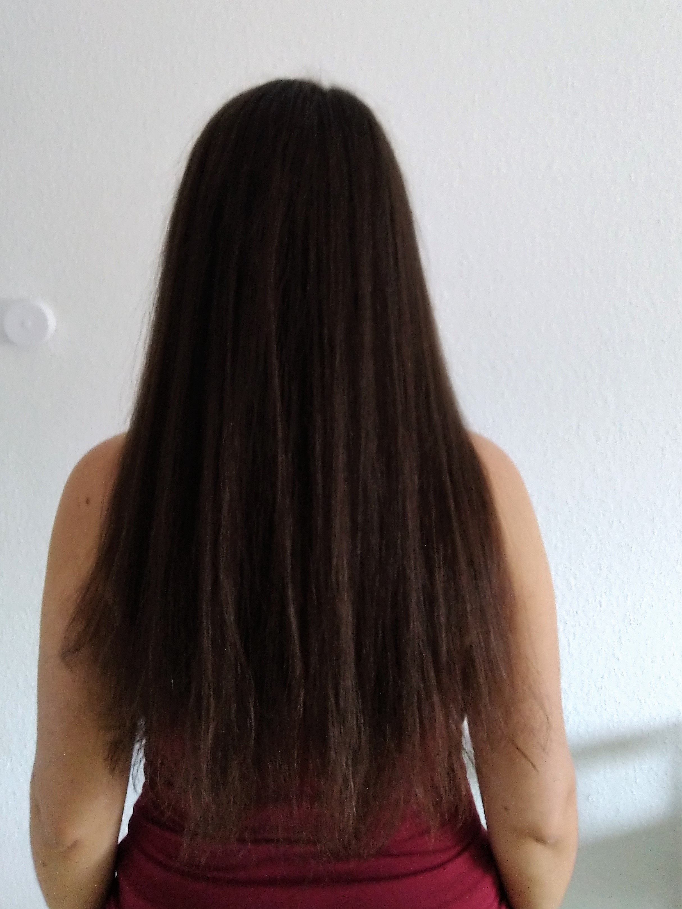
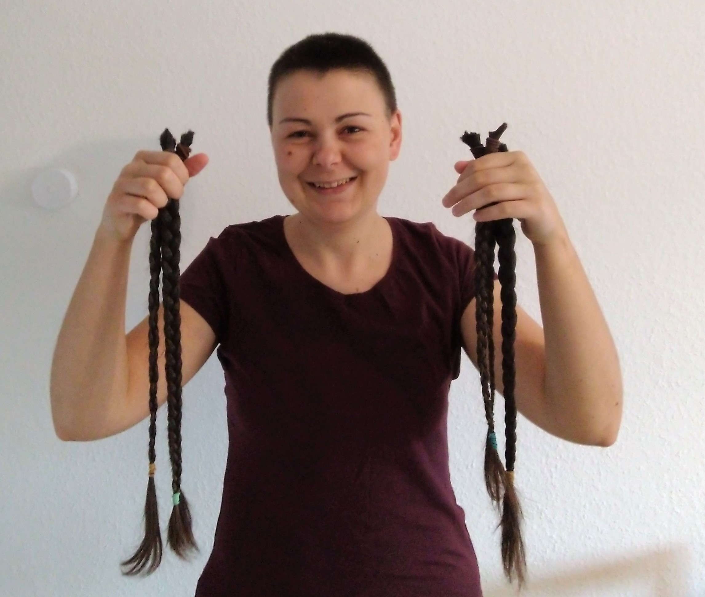

Hair story
April 03, 2021
It is not a late 1st April joke. I've cut my hair short for real!
This is how long it was just today morning.

I've never had such long hair before. Sure, it's partly because of covid -- I've had my last haircut about a year ago, just one or two weeks before the first lockdown. But I was letting my hair grow for years. So why I've cut them now?
Because it takes a lot of time and a lot of water to wash them. It takes even more time to dry them.
Because they are always getting in the way. You can't eat or brush your teeth without making at least a ponytail first. Because my new chair has support for the head which does not work with most of my usual hairstyles. I can't even sleep with loose hair, because I would pull them all the time.
Because of windy weather. Or rainy weather (try to put a hood over a ponytail). Or cold weather (not every hairstyle goes together with a cap). Or hot weather (just too hot). So basically any weather. Most of the time you spend outside, a simple ponytail doesn't work very well and loose hair is not an option at all.
If you have ever had long hair, you probably know what I'm talking about.
But the main reason was that I have been thinking about it for years. I had short hair when I was 15. Then I let them grow to have a nice hairstyle for the ball at the end of high school, with the plan to cut them afterward. But in between, I started to date a guy. When I told him that I would like to cut my hair short, his response was that he will break up with me if I do. So I didn't cut it. (In the end, he did break up with me just a few weeks after I had got my hair cut, though not really short. I take it merely as a coincidence.) Since then, it has been resonating in my head. That I need to have long hair to keep a guy. So every time I was thinking about finally cutting my hair, I ended up with a compromise, with medium-length hair. It took me more than six years to gather the courage.
So, please, never ever threaten someone about his haircut or appearance in general. It may sound like an innocent remark, but it can have a long-term impact on the self-confidence of that person.
On the positive side, my hair grew so long that I can donate it now. Hopefully, it will help someone else to increase his or her self-esteem :)
